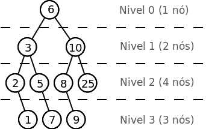

Use como base as classes BTree<T> e BTNode<T> conforme descritas no exercício 2 da aula prática.
Acrescente à classe dada um novo método public int nodesLevel(int k) que devolve o número de nós num dado nível de profundidade. É garantido que k é um nível de profundidade válido (ou seja, com pelo menos um nó da árvore nesse nível).
A figura seguinte ilustra uma árvore e o número de nós que tem em cada nível de profundidade:

Deverá submeter apenas a classe BTree<T>, acrescentando o método nodesLevel como pedido (e sem apagar ou modificar nenhum dos outros métodos dados como base). Pode assumir que terá acesso no Mooshak à classe BTNode<T> (não a pode mudar) e se precisar pode criar outros métodos auxiliares. O Mooshak irá criar várias instâncias da sua classe e irá fazer uma série de testes ao método por si implementado.
Os exemplos correspondem à arvore da figura, ou seja, t = 6 3 2 N 1 N N 5 N 7 N N 10 8 N 9 N N 25 N N
| Chamada | Valor de retorno |
|---|---|
| t.nodesLevel(0) | 1 |
| t.nodesLevel(1) | 2 |
| t.nodesLevel(2) | 4 |
| t.nodesLevel(3) | 3 |